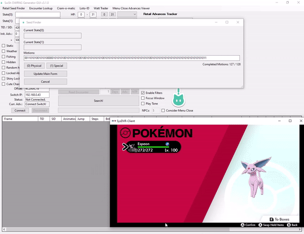
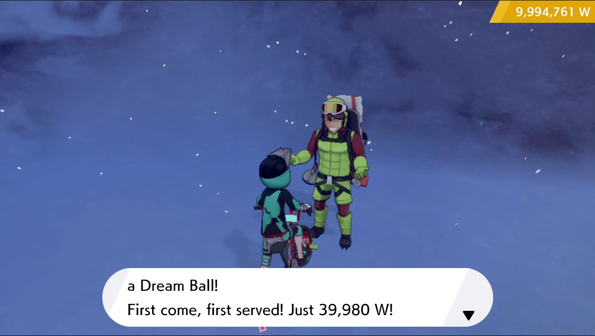

This guide will cover the process of RNG abusing item machines (Cram-o-Matic, Rotom Lottery) and NPCs (Watt Trader) in Sword/Shield, using the SWSH Overworld RNG Generator by LegoFigure11. Item RNG abuse is best utilized to help players obtain rare/valuable items such as rare Pokeballs.
From here this guide assumes you are using an unmodified Switch console.
Click here if you are using a Switch console running Atmosphere CFW!SWSH_OWRNG_Generator_GUI tracks the current RNG state and the number of advancements since connecting to the program. The RNG state advances naturally based on your location, the weather, and the number of NPCs present or active.
Different in-game actions can also be used to advance the RNG state with varying influence, the most useful actions can be found in the table directly below.
| Type of action | Description of action | Adv. influence |
|---|---|---|
| Player Movement | Moving the player using the control stick, then letting the control stick fall back into it's resting state. This Includes whistle and bike bell. |
1-3 Advancements per input. |
| Menu Close | Opening and closing the pause menu using the X button. |
Varying depending on location and environment, predictable (explained below). |
| NPC Activation | Standing near an NPC to make them notice the player. Moving away from an NPC will cause them to "deactivate". Useful for covering short distances quickly. |
~2500 advancements per minute. |
| Animations/Motions | Having your Pokémon animate on the summary screen or party menu by clicking in the L3 button, or by using the Skip feature. |
+1 advancement per animation on the individual Pokémon summary screen. +1 advancement per button input on the party summary screen. |
| Date Skipping | Using the date-skipping exploit to advance towards targets and reset time based events, this is the quickest way to advance frames. | Variable influence based on the amount of Pokémon stored inside boxes, up to 15,000~ per day skipped. |
The number of frames advanced by date-skipping varies depending on the number of Pokémon in your boxes. Fill your boxes with Pokémon (NOT EGGS) to maximize this feature. Track the rough amount of frame advancements per day skipped to avoid overshooting target frames.
Date-skipping on retail hardware is a manual process that requires some initial setup, there are two methods you can use, the faster method requires a Nintendo Switch Online subscription or multiple consoles/games, while the slower method does not.
This refers to an in-game feature on the Pokémon summary screen or party menu. Pressing L3 (pressing the left stick) will cause your Pokémon to perform one of 2 animations, these will be referred to as "physical" and "special" animations.
In the above image, we can see Espeon performing 2 different types of animation.
It is important to pick a Pokémon with a clear physical/special example. This can be anything you want, just make sure the animation difference is obvious to you.

The Retail Seed Finder subwindow is where players can calculate their current seed, this is done by recording a sequence of 128 motions/animations in a row.
Retail Seed Finder subwindow on SwSh OWRNG Generator GUI.Summary.L3 button to cause an animation, take note of if the animation was physical or special.(0) Physical button. If the animation was special, press the (1) Special button.Update Main Form button to paste it into the main window.Re-identifying your current seed is done using the Retail Advances Tracker feature of the Main Window, and is essentially a simplified version of finding your seed using animations.
Generate Pattern button after initially identifying your seed.Update States button to paste your current seed into the top-left of the main window.Recording animations through the Pokémon summary screen is recommended, this is due to the party menu advancing +1 per button clicked, the summary screen advances +1 per animation, making it easier to keep track of.
If your results are not desirable, you will need to reset the game and identify your current seeds again.
Figure 3 - Menu Close Advances Viewer window overview
The Menu Close Advances Viewer sub window (pictured above), predicts the number of advancements from closing the pause menu. This advancement method is recommended as closing the pause menu freezes the RNG state for a few seconds, making it an extremely consistent method of hitting an exact target frame.
After entering your seeds and hitting search, a table will appear. The Jump column of the table displays the amount of advancements that will occur from closing the pause menu, this number varies based on the amount of NPCs in your area, so it is important to calibrate your NPC count when attempting to use menu close prediction.
Retail Seed Finder to identify your current seed, make sure to click Update Main Form button after doing so.Example - If a total of 15 advancements occured from seed re-identification, and only 8 advancements were consumed from animations, a total of 7 advancements occured from closing the pause menu.
Update States button, open the Menu Close Advances Viewer sub window, make sure the seeds inside the window match the top left of the main window.Jump column does not match, increase or decrease the number of NPCs by 1 until everything aligns properly with what is expected.Jump column, so we would gradually alter the NPC value until +7 appears to get the correct NPC count.We highly recommend becoming familiar with NPC count calibration before continuing with the guide. This method is used in almost all cases as it provides the most consistency.
With all the required reading out of the way, let's get into it! Click one of the below links to jump to the section that applies to you.
The goal is to interact with the Cram-o-Matic machine on the calculated target frame given to us by the Cram-o-Matic window of the generator, we will be using the advancement methods listed in the table above to hit the target frame, most notably, menu close, animations & date skipping.
In this example we will be aiming for a 5 Level Balls. You can be more specific with the filters if you wish, such as filtering for specific rare items.
Figure 1 - Tool setup:
In Figure 1, we can see that the current seed has been identified using the above mentioned method, and the search filters have been set inside the Cram-o-Matic sub window.

In Figure 2, the player is standing directly facing the Cram-o-Matic machine in game, close enough to interact with it within a single A button press.
X button to pause the game.Search button to check for desirable target frames.If you do not find a suitable target frame, save and restart the game, then repeat the above process until a target has been found.

We found a target frame! 5 Rare balls on advance 41. This will be the frame we close the pause menu and interact with the Cram-o-Matic machine, as we are using the Consider menu close feature.
Consider menu close provides the frame to close the pause menu on to land directly onto your desired target frame, this feature is recommended as it does the menu close calculations for you.
First you will need to calibrate the amount of NPCs in the area. Using the above mentioned method we calculated that there are 21 NPCs inside the Dojo. This number is consistent even when resetting the game, but subject to change based on story progression.
date skipping (large distances) or menu close + animations (small distances)Update States button and re-open the Cram-o-Matic sub window after doing so.A button press, then pause the game.Update States button on the main window again to reflect your new current seed, then close and re-open the Cram-o-Matic sub window.From this point it's recommended to only usemenu close&amimationadvancements as they advance in small increments, making them easy to keep track of.
NPCs field and click the Consider menu close checkbox, then click the Search button. If you can see your target frame, great! Ignore the next 2 steps.Init Adv. field by 1 until your target frame becomes visible. You will now need to advance a number of frames using animations based on the number inside the Init Adv. field.Init Adv. field, do 3 animation advancements to line yourself up properly. You will now have a new target frame.In rare cases, your target frame will not be visible at all, this means you cannot hit your target using menu close prediction by itself. Instead, aim to get as close as you can using menu close prediction, then use player movement advancements to hit your target seed instead.
Remember, the goal is to interact with the machine on the correct frame, as long as you hit your target seed and stayed within the dialogue without backing out, you will achieve your desired result.


The result matches the output given by the Cram-o-Matic sub window, mission accomplished! We got 5 Level Balls from the Cram-o-Matic machine on the first attempt!
That's all there is to RNG abusing the Cram-o-Matic on retail hardware!
The goal is to interact with the Rotom PC in the PokeCenter on the calculated target frame given to us by the Loto-ID window of the generator to obtain a Master Ball. We will be using the advancement methods listed in the table above to hit the target frame, most notably, menu close, animations & date skipping.
Loto-ID.txt is a text file that comes with the program, which can be used to output results based on a list of TIDs. The Rotom lottery game reads the TIDs of all the Pokemon inside your boxes, so if you have Pokemon stored in your boxes from multiple save files, you may find it helpful to create a list of TIDs to increase your odds of finding a result.

In Figure 1, we can see that the current seed has been identified using the above mentioned method, and the search filters have been set inside the Loto-ID sub window.

In Figure 2, the player is standing directly facing the PC in Wedgehurst PokeCenter, close enough to interact with it within a single A button press.
X button to pause the game.Search button to check for desirable target frames.If you do not find a suitable target frame, save and restart the game, then repeat the above process until a target has been found.
We found a target frame! a Master Ball on advance 52. This will be the frame we close the pause menu and interact with the PC, as we are using the Consider menu close feature.
Consider menu close provides the frame to close the pause menu on to land directly onto your desired target frame, this feature is recommended as it does the menu close calculations for you.
First you will need to calibrate the amount of NPCs in the area. Using the above mentioned method we calculated that there are 7 NPCs inside the PokeCenter. This number is consistent even when resetting the game, but subject to change based on the PokeCenter you are in.
date skipping (large distances) or menu close + animations (small distances)Update States button and re-open the Loto-ID sub window after doing so.A button press, then pause the game.Update States button on the main window again to reflect your new current seed, then close and re-open the Loto-ID sub window.From this point it's recommended to only usemenu close&amimationadvancements as they advance in small increments, making them easy to keep track of.
NPCs field and click the Consider menu close checkbox, then click the Search button. If you can see your target frame, great! Ignore the next 2 steps.Init Adv. field by 1 until your target frame becomes visible. You will now need to advance a number of frames using animations based on the number inside the Init Adv. field.Init Adv. field, do 3 animation advancements to line yourself up properly. You will now have a new target frame.In rare cases, your target frame will not be visible at all, this means you cannot hit your target using menu close prediction by itself. Instead, aim to get as close as you can using menu close prediction, then use player movement advancements to hit your target seed instead.
Remember, the goal is to interact with the machine on the correct frame, as long as you hit your target seed and stayed within the dialogue without backing out, you will achieve your desired result.


The result matches the output given by the Loto-ID sub window, mission accomplished! We got a Master Ball from the lottery machine on the first attempt!
That's all there is to RNG abusing the lottery minigame on retail hardware!
The goal is to interact with the Watt Trader in Snowslide Slope on the calculated target frame given to us by the Watt Trader window of the generator, we will be using the advancement methods listed in the table above to hit the target frame, most notably, menu close, animations & date skipping.
In this example we will be aiming for a Dream Ball or Beast Ball, as these are the most valuable items that this trader has to offer.
Before starting, stock up on enough PokeWatts to buy the rare balls from the trader, you will need 40,000 Watts per ball. Also unlock the Snowslide Slope fly point if you have not already done so by talking to the Watt Trader.
Now you will need to put your game in a specific state by following these instructions:
The Watt Trader NPCs items are locked in upon speaking to him for the first time during any day, this is why resetting time based events is important for hitting the correct target frame.
You can save the game upon resetting time based events to preserve the correct NPC state, but this means you will need to reset the game after a failed attempt, and re-activate the fast date skipping exploit if used.

Observing the above image, we can see that interacting with the Watt Trader using the above method does not cause the RNG state to rapidly advance (see the Curr Adv. field on the bottom-left), but if we do not interact with the NPC quick enough...

We can now see advancements are occuring at an almost uncontrollable rate. So you will need to interact with the Watt Trader quickly (as demonstrated in Figure 1) as the rapid advancements will cause you to miss your target frame.
Disclaimer - The advancement rate was observed using Custom Firmware for the sake of demonstration, the rest of this guide is focused on using pure retail hardware.
Once you are certain your in-game setup is correct, you can begin searching setting up SWSH_OWRNG_Generator_GUI.
Figure 3 - Tool Setup Awesome, everything looks good! We can see our current seeds on the Watt Trader tab and have our filters set properly to look for Dream Ball/Beast Ball. Time to stand begin searching for target frames!
Search button to check for desirable target frames.If you do not find a suitable target frame, save and restart the game, then repeat the above process until a target has been found.
We found a target frame! a Dream Ball on advance 30. This will be the frame we close the pause menu and quickly dash over to interact with the Watt Trader NPC, as we are using the Consider menu close feature.
Consider menu close provides the frame to close the pause menu on to land directly onto your desired target frame, this feature is recommended as it does the menu close calculations for you.
First you will need to calibrate the amount of NPCs in the area. Using the above mentioned method we calculated that there are x NPCs currently in Snowslide Slope. There are typically 0-2 NPCs in this area, but this number is subject to change when resetting the game, so calibration is important.
date skipping (large distances) or menu close + animations (small distances)Update States button and re-open the Watt Trader sub window after doing so.Update States button on the main window again to reflect your new current seed, then close and re-open the Watt Trader sub window.From this point it's recommended to only usemenu close&amimationadvancements as they advance in small increments, making them easy to keep track of.
NPCs field and click the Consider menu close checkbox, then click the Search button. If you can see your target frame, great! Ignore the next 2 steps.Init Adv. field by 1 until your target frame becomes visible. You will now need to advance a number of frames using animations based on the number inside the Init Adv. field.Init Adv. field, do 3 animation advancements to line yourself up properly. You will now have a new target frame.In rare cases, your target frame will not be visible at all, this means you cannot hit your target using menu close prediction by itself. Instead, aim to get as close as you can using menu close prediction, then use player movement advancements to hit your target seed instead.
Remember, the goal is to interact with the NPC on the correct frame, as long as you hit your target seed and stayed within the dialogue without backing out, you will achieve your desired result.
In the above image we can see that the game was unpaused on frame 30, and menu close prediction brought the current advancement to frame 33, which is the target frame when not factoring in menu close prediction. Then we quickly interacted with the Watt Trader to lock in our desired item.
You will need to perform 2 date skips and 2 NPC interactions to claim your prize, as your prize will be available on the third consecutive day. After interacting with the NPC to hit your target frame, do the following:
Exit out of dialogue -> date skip a single day -> interact with the watt trader -> Exit out of dialogue -> date skip a single day -> interact with the watt trader, you should now see your item available for purchase by checking Today's Highlight.
That's all there is to RNG abusing the Watt Trader on Snowslide Slope on retail hardware! It may take you a few attempts to get a strong grasp of the process, but once you do it becomes easy to manipulate your desired item.